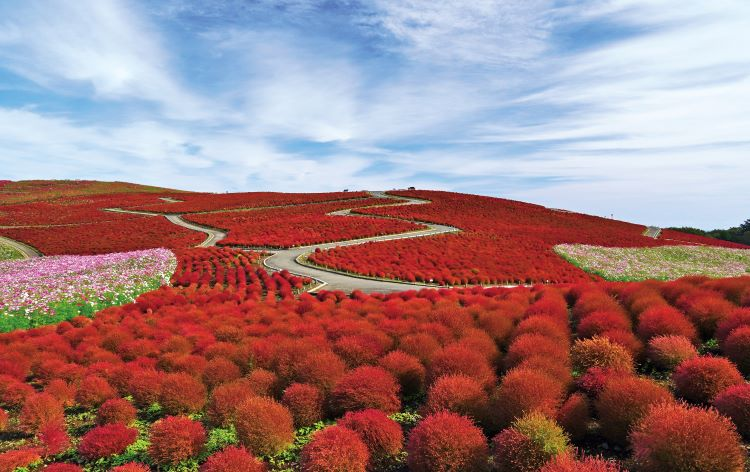

おすすめの時期・見頃
- 春（ネモフィラ）： 4月中旬 ～ 5月上旬
- 夏（緑コキア）： 7月中旬 ～ 9月中旬
- 秋（赤コキア）： 10月上旬 ～ 10月中旬

アクセス方法
🚌 電車・バスでお越しの方
JR常磐線「勝田駅」東口の2番乗り場から、路線バスで「海浜公園西口」または「海浜公園南口」下車（約15分）。
🚗 お車でお越しの方
常陸那珂有料道路「ひたち海浜公園IC」を出てすぐ。
国営ひたち海浜公園へ行く前にチェック！

JR常磐線「勝田駅」東口の2番乗り場から、路線バスで「海浜公園西口」または「海浜公園南口」下車（約15分）。
常陸那珂有料道路「ひたち海浜公園IC」を出てすぐ。